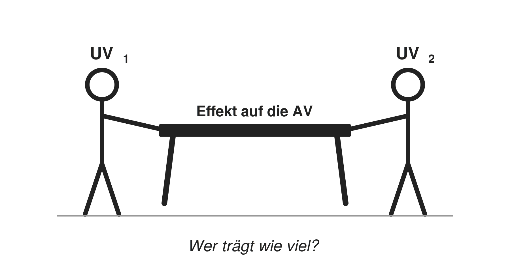
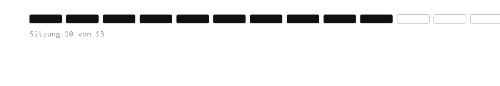

* nur bei multiplen linearen Regressionen (mind. zwei UVs). Voraussetzungen 1–3 sind der Analyse vorgelagert (Daten & Design), 4–8 werden am geschätzten Modell geprüft.
1 Skalenniveau: Welches Modell für welche Skala?
Skalenniveau der AV
Beispiel
Modell
Metrisch
Lebenszufriedenheit (0–10), Einkommen
Lineare Regression (OLS) — diese Sitzung
Dichotom (binär)
Wahlbeteiligung (ja/nein)
Logistische Regression — Sitzung 11!
Nominal (mehr als 2 Kategorien)
Parteiwahl (CDU, SPD, Grüne, ...)
Multinomiale logistische Regression
Ordinal
Zustimmung (stimme gar nicht zu ... voll zu)
Ordinale logistische Regression
Zählvariable
Anzahl Demonstrationsteilnahmen
Poisson- / Negativ-Binomial-Regression
Merke: Das Skalenniveau der AV bestimmt das Modell. Die UVs dürfen jedes Skalenniveau haben (kategoriale UVs als Dummies). Quasi-metrische AVs (z.B. 5er-Skalen) werden in der Praxis oft mit OLS gerechnet — umstritten, aber verbreitet.
2 Exogenität
Die UVs dürfen nicht mit dem Fehlerterm korrelieren → alles, was die AV beeinflusst und nicht im Modell steht, darf nicht systematisch mit den UVs zusammenhängen.
Häufigste Verletzung: Omitted Variable Bias (OVB) → relevante Variable fehlt im Modell, die mit einer UV und der AV korreliert
Beispiel: Einkommen ~ Bildung
Fehlt: soziale Herkunft (beeinflusst Bildung und Einkommen)
Herkunftseffekt landet im Fehlerterm → korreliert mit Bildung
Bildungskoeffizient „schluckt” den Herkunftseffekt → verzerrt
Die Schätzung selbst wird falsch — nicht nur die Standardfehler!
Kein statistischer Test möglich (ε ist unbeobachtbar)
Theoriegeleitete Lösung: Welche Variablen beeinflussen AV und UV gemeinsam? → als Kontrollvariablen aufnehmen.
Vollständige Lösung nur über Forschungsdesign (Experimente → fortgeschrittene Methoden)
3 Unabhängige Beobachtungen
Was heißt das? Die Beobachtungen beeinflussen sich nicht gegenseitig
Bsp. für Cluster: Regionen, Klassen, Länder, Haushalte, Personen über die Zeit (Paneldaten)
Warum problematisch? Das Modell tut so, als hätte es unabhängige Datenpunkte → ist sich zu sicher → Standardfehler zu klein → Effekte erscheinen signifikant, obwohl sie es nicht sind (Scheinsignifikanz)
Prüfung nicht statistisch, sondern über das Studiendesign
Lösungen: Abhängigkeiten explizit modellieren statt sie zu ignorieren!
3 Unabhängige Beobachtungen
Abhängigkeitsstruktur
Beispiel
Lösung
Cluster (Fälle in Gruppen)
Schüler:innen in Klassen, Befragte in Ländern
Mehrebenenmodell oder cluster-robuste Standardfehler
Alle Verfahren → fortgeschrittene Methoden; hier nur als Ausblick. Im ALLBUS (Zufallsstichprobe einzelner Personen) ist die Annahme erfüllt.
4 Linearität
Was heißt das? Der Zusammenhang zwischen UV und AV lässt sich durch eine Gerade beschreiben — der Effekt ist überall gleich stark
Warum problematisch? Eine Gerade durch einen gekrümmten Zusammenhang beschreibt die Daten falsch — Koeffizient und Vorhersagen sind verzerrt
Beispiel: Alter und Lebenszufriedenheit verlaufen oft U-förmig — eine Gerade würde fälschlich „kein Effekt” zeigen
Lösung: Polynomiale Regression (z.B. Alter²) oder Spline-Modelle
5 Homoskedastizität
Was heißt das? Die Residuen streuen über alle vorhergesagten Werte hinweg gleich stark — das Modell ist überall gleich (un)genau
Bei ungleicher Streuung (Heteroskedastizität) sind die Standardfehler falsch → p-Werte und KIs nicht verlässlich
Die Koeffizienten selbst bleiben unverzerrt — nur die Signifikanzaussagen leiden
Lösung: Robuste Standardfehler (z.B. HC3)
6 Keine Multikollinearität
Multikollinearität liegt vor, wenn zwei (oder mehr) UVs so stark korrelieren, dass sie im Grunde dasselbe messen
Bsp.: Bildungsjahre und höchster Abschluss
Warum problematisch? Interpretation einzelner Koeffizienten wird unzuverlässig und Standardfehler sehr groß! (Vorhersagekraft des Modells bleibt ok.)

7 Keine Ausreißer
Was heißt das? Kein einzelner Fall dominiert die Schätzung
Warum problematisch? Bei OLS werden Residuen quadriert — extreme Fälle bekommen dadurch überproportionales Gewicht und können die Gerade regelrecht „zu sich ziehen”
Wichtig: Ausreißer prüfen heißt nicht automatisch ausschließen! Erst klären: Datenfehler oder echter Extremfall?
8 Normalverteilte Residuen
Was heißt das? Die Abweichungen vom Modell sind zufällig und symmetrisch — viele kleine, wenige große Fehler
Warum problematisch? p-Werte und KIs basieren auf der t-Verteilung — diese Herleitung setzt normalverteilte Residuen voraus
Bei großem n entschärft sich das Problem (zentraler Grenzwertsatz), daher in der Praxis meistens irrelevant!
Voraussetzungen prüfen
Prüfung d. Voraussetzungen
Voraussetzung
Prüfung
Skalenniveau (metrische AV)
theoretisch: Codebuch, Theorie
Exogenität
theoretisch: relevante Kontrollvariablen im Modell?
Unabhängige Beobachtungen
theoretisch: Studiendesign
Linearer Zusammenhang
grafisch: Scatterplot + Loess; Residuen vs. Fitted statistisch: Rainbow-Test
Homoskedastizität der Residuen
grafisch: Residuen vs. Fitted-Plot statistisch: Breusch-Pagan-Test
* nur bei multiplen linearen Regressionen
** nur bis n = 5000; bei großem n grafische Prüfung bevorzugen
Die UVen können metrisch oder kategorial-dichotom sein.
Remedies bei Verletzung
Was tun bei Verletzung der Annahmen?
Verletzung
Lösung
Skalenniveau (AV nicht metrisch)
Anderes Modell wählen, z.B. logistische Regression bei binärer AV (→ Sitzung 11!)
Exogenität verletzt
Relevante Kontrollvariablen aufnehmen; vollständig nur über Forschungsdesign lösbar (fortgeschritten)
Abhängige Beobachtungen
Cluster-robuste Standardfehler; Mehrebenen- oder Panelmodelle (FE/RE)
Eine der korrelierten UVen ausschließen oder zu Index zusammenfassen
Ausreißer
Fälle prüfen; Modell mit & ohne Ausreißer vergleichen; ggf. ausschließen; oder robuste Regression (fortgeschritten)
Nicht normalverteilte Residuen
Bei großem n unkritisch (zentraler Grenzwertsatz); bei kleinem n: Bootstrapping (fortgeschritten)
* Long JS & Ervin LH (2000). Using heteroscedasticity consistent standard errors in the linear regression model. The American Statistician, 54(3), 217–224. Zum Vertiefen: Kapitel 21 bis 24 in Wagemann, Goerres & Siewert (2020). Handbuch Methoden der Politikwissenschaft. Springer.
Verletzung d. Linearität
Warning: Paket 'ggplot2' wurde unter R Version 4.5.3 erstellt
`geom_smooth()` using formula = 'y ~ x'
`geom_smooth()` using formula = 'y ~ x'
`geom_smooth()` using formula = 'y ~ x'
Rot = lineares Modell
Liegt die Punktwolke systematisch daneben → Annahme verletzt
Vier typische Muster + Lösungen auf den nächsten Folien
Muster 1: U-Form
`geom_smooth()` using formula = 'y ~ x'
Beispiel: Lebenszufriedenheit ~ Alter (Tief in der Lebensmitte)
Lösung: quadratischen Term ergänzen
lm(ls01 ~ age +I(age^2), ...)
Rot = lineares Modell verfehlt die Kurve Grün = Modell mit I(x^2) fängt sie ein
Muster 2: Sättigung
`geom_smooth()` using formula = 'y ~ x'
Beispiel: Lebenszufriedenheit ~ Einkommen (jeder zusätzliche Euro bringt weniger)
Lösung: UV logarithmieren
lm(ls01 ~log(incc), ...)
Nur bei positiven Werten möglich!
Muster 3: Exponentielles Wachstum
`geom_smooth()` using formula = 'y ~ x'
Beispiel: AV wächst prozentual statt absolut (z.B. Kampagnenbudgets)
Lösung: AV logarithmieren
lm(log(spending) ~ x, ...)
Koeffizienten dann näherungsweise als %-Änderung interpretierbar
Muster 4: Schwellenwert / Knick
`geom_smooth()` using formula = 'y ~ x'
Beispiel: Effekt setzt erst ab bestimmtem Wert ein (z.B. Sperrklausel)
Lösung: UV kategorisieren (Dummy)
lm(y ~I(x > schwelle), ...)
Linearität: typische Muster & Lösungen
Muster
Beispiel
Lösung
U-Form / umgekehrte U-Form
Lebenszufriedenheit ~ Alter
Quadratischer Term: I(x^2)
Sättigung
Lebenszufriedenheit ~ Einkommen
UV logarithmieren: log(x)
Exponentielles Wachstum
AV wächst prozentual statt absolut
AV logarithmieren: log(y)
Schwellenwert / Knick
Effekt erst ab bestimmtem Wert (z.B. Sperrklausel)
UV kategorisieren
Komplexe Wellenform
mehrfache Richtungswechsel
Splines (→ fortgeschrittene Methoden)
Faustregel: ein Bogen → quadratischer Term · einseitiges Abflachen → log() (nur bei positiven Werten) · mehr als zwei Richtungswechsel → Splines
Annahme d. Homoskedastizität
Robuste Standardfehler (HC3)
Problem Heteroskedastizität: Die Streuung der Residuen ist nicht überall gleich → die normalen Standardfehler sind zu klein oder zu groß
Die Koeffizienten bleiben identisch — nur SEs, t- und p-Werte ändern sich
Lösung: Standardfehler werden so korrigiert, dass sie der tatsächlichen, ungleichen Streuung gerecht werden
```{r}lmtest::coeftest(model_2, vcov = sandwich::vcovHC(model_2, type ="HC3"))```
Hands On - Diagnostics
Minute Cards
Bitte füllt die Minute Cards für die heutige Sitzung aus. Das sollt enicht länger als 3 Minuten dauern. Vielen Dank für eure Mitarbeit!
Warning: Paket 'qrcode' wurde unter R Version 4.5.3 erstellt
Vielen Dank und bis kommenden Dienstag!

Übung 10 zu Regressionsdiagnostik bis spätestens Sonntagabend!